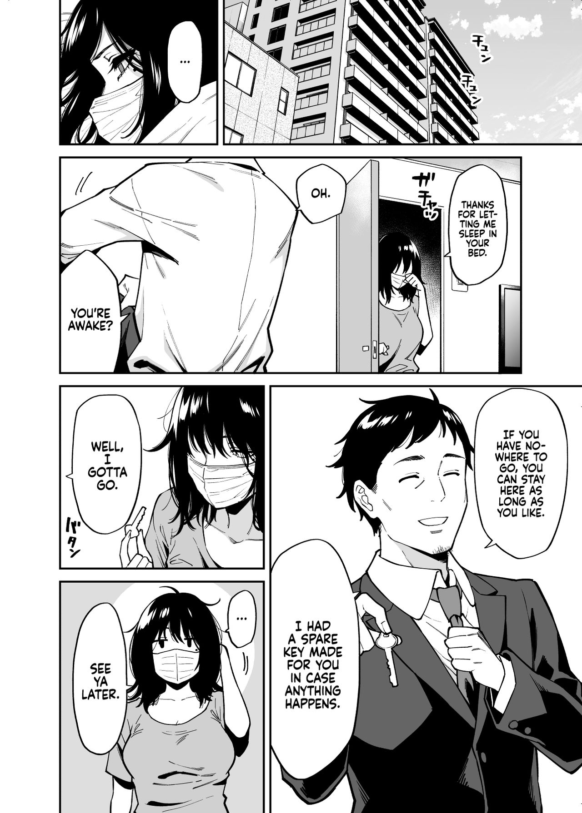

Compressing pictures and videos
Preamble
This article explains how to reduce the filesize of videos and pictures.
This is not an analysis about the different compression methods or how they compare in their algorithm against each other.
This is a simple comparison of my own experiments and methods on how to reduce filesizes.
To install the tools mentioned here:
- mat2 - via sudo apt-get install mat2 or via git clone
- jpegoptim - via sudo apt-get install jpegoptim
- pngquant - via sudo apt-get install pngquant
- ffmpeg - via sudo apt-get install ffmpeg
- convert (optional) - via sudo apt-get install imagemagick
Compressing .jpg images
I tried to compress the following image of Megumi Koneko with jpegoptim:

My findings: The metadata of image files can be HUGE. I tried to compress the image with jpegoptim but the filesize wouldn't change much. Then I tried to remove the Metadata of it and it reduced the filesize by an immensely 80%!
The following table shows the filesize of the image in corrolation to what commands were ran:
| Size(bytes) | Size(MB) | Methods used |
|---|
| 8872122 | 8.5M | None (=input file) |
| 8872122 | 8.5M | jpegoptim |
| 1407225 | 1.4M | mat2 |
| 1302516 | 1.3M | mat2 + jpegoptim |
As you can see the optimization alone didn't accomplish much, but if you clean up the metadata most of the filesize is gone!
An important detail here: Using jpegoptim BEFORE the metadata removal doesn't optimize the file at all, only afterwards jpegoptim reduced the filesize by 0.1MB.
An example with a different folder of Megumi Koneko's shooting pictures:
user@fedora:~/temp$ du -sh Rurika_HD_Set/
469M Rurika_HD_Set/
user@fedora:~/temp$ mat2 --inplace Rurika_HD_Set/*
user@fedora:~/temp$ du -sh Rurika_HD_Set/
77M Rurika_HD_Set/
user@fedora:~/temp$ jpegoptim Rurika_HD_Set/*
[...]
user@fedora:~/temp$ du -sh Rurika_HD_Set/
72M Rurika_HD_Set/
I saved nearly 400MB (!!) of my 470MB collection simply by removing metadata.
TL;DR: If you have studio-quality pictures (or shooting pictures) removing the metadata can save a lot more disk space than only using jpegoptim.
Compressing .png images
The same concept as above applies for .png images aswell: Use mat2 to remove metadata and then use pngquant to optimize the image.
As an example here is a character of the mobile game "Arknights" with a transparent background.
To compress the image I used the following command:
pngquant -v --skip-if-larger -s 1 -f --ext .png filename.png
Explanation of the command above: -v makes it verbose, skip-if-larger is self-explanatory, -s 1 means "brute-force the optimization as good as possible", --ext .png sets the output filename to be the same as the input filename and -f forces the output file to overwrite the input file (because they have the same name thanks to --ext .png).
With this the filesize went from 728KB to 189KB (!).
A comparison of both of these files (the first / left file is the unoptimized one, the later the optimized one):
Barely any noticeable difference between the two, while the filesize is more than halfed.
BUT there is another way to minimize filesize: Converting the image to a .jpg file.
You can convert a png to jpg easily with ffmpeg with:
ffmpeg -i "input.png" "output.jpg"
If you convert the above 728KB source image into jpg with the above command the size will go down to 70.6KB, less than half the compressed png size.
The main problem with this approach is the possible quality loss in the image (jpg is a lossy format) and the missing alpha/transparency. If you convert the above image to jpg you will see a black background and not a transparent one, because jpg does not support transparency.
If you now convert a whole folder of images from png to jpg it can save you a lot of disk space, in my case freeing multiple GB of storage.
An example of converting my folder of 36 png images to jpg:
user@debian:~/temp$ du -sh .
13M .
user@debian:~/temp$ ls -l | wc -l
36
user@debian:~/temp$ for i in *.png; do ffmpeg -loglevel error -hide_banner -i "$i" "$i.jpg"; done
user@debian:~/temp$ rm *.png
user@debian:~/temp$ ls -l | wc -l
36
user@debian:~/temp$ du -sh .
4.9M .
As you can see in the output above, I went from 13MB to 4.9MB without much quality lost.
If you decide to accept the possibility of quality loss then this is a great way of saving a lot of storage space.
Compressing videos
Videos are optimized a bit differently than images. You mainly use the tool ffmpeg to run as many commands as you need.
To simply compress a video you can use ffmpeg -i "input.mp4" -crf 25 output.mp4. crf means "constant rate factor" and the higher you set it the more compressed the videos get. 25 is a good number for compression vs quality, and the video quality is always acceptible with it.
An example to compress an old video further: You can change the codecs to more modern ones. Simply add -vcodec h264 -acodec aac inside the ffmpeg command to change the codecs to h264/aac respectively. (This would make the command look like ffmpeg -i "input.mp4" -crf 25 -vcodec h264 -acodec aac output.mp4)
If the framerate of the video is 60 you could lower it to 30 to save even more space. Simply add -r 30 inside the ffmpeg command to limit the framerate to 30.
Last but not least: Some videos have an extremely high resolution (e.g. 4K) and you can save a LOT of space if you limit the resolution to a lower one. Simply add -vf "scale=1280:-1" to set the resolution of the output video to HD.
With all the optimizations combined the command would look like:
ffmpeg -i "input.mp4" -crf 25 -vcodec h264 -acodec aac -r 30 -vf "scale=1280:-1" output.mp4
This once lowered the filesize of a 4K 30min video from 3.2GB down to 800MB (!).
Another example would be NVidia's Shadowplay function: I sometimes clip gameplay videos that are 1 minute long, are in FullHD resolution and in 60fps. These clips are 330MB for one minute of video. If I simply run ffmpeg -i "Gameplay 03.02.2022.mp4" -crf 25 output.mp4 it reduces the filesize down to 100MB or even as low as 30MB if the game doesn't have much action going on.
An example:
user@debian:~/Videos$ ls -ahl
-rwxrwxrwx 1 user user 341M Jan 22 16:41 'divinity2_20220122_16.mp4'
user@debian:~/Videos$ ffmpeg -i "divinity2_20220122_16.mp4" -crf 25 _divinity2_20220122_16.mp4
user@debian:~/Videos$ ls -ahl _divinity2_20220122_16.mp4
-rwxrwxrwx 1 user user 54M Feb 3 10:31 _divinity2_20220122_16.mp4
Using ffmpeg to either optimize or compress the video to sizes you think are reasonably enough is a great way to save a lot of storage space.
Bitrates from compressing 2 different videos, cut out from a livestream with copied codecs):
Elden Ring gameplay (running around, camera movement, action, no static screens)
| Bitrate(kbit/s) | Size | Type | Command |
|---|
| 5400 | 38.7M | 60FPS/FHD | /source file/ |
| 6700 | 49.1M | 60FPS/FHD | -acodec aac -vcodec h264 |
| 6100 | 44.9M | 30FPS/FHD | -acodec aac -vcodec h264 -r 30 |
| 3500 | 26.8M | 60FPS/HD | -acodec aac -vcodec h264 -vf "scale=1280:-1" |
| 3200 | 23.9M | 30FPS/HD | -acodec aac -vcodec h264 -vf "scale=1280:-1" -r 30 |
Vlog video (static camera, not much movement, focus on talking, shoulders-up angle)
| Bitrate(kbit/s) | Size | Type | Command |
|---|
| 5100 | 38.4M | 60FPS/FHD | /source file/ |
| 1100 | 8.99M | 60FPS/FHD | -acodec aac -vcodec h264 |
| 1000 | 8.51M | 30FPS/FHD | -acodec aac -vcodec h264 -r 30 |
| 464 | 4.41M | 30FPS/HD | -acodec aac -vcodec h264 -vf "scale=1280:-1" -r 30 |
Both of these videos above are taken from a single livestream. The bitrate of these streams is rather static because livestreaming services prefer encoding speed over size-efficiency. This enables them to show streams live and with not much delay, but this also causes the bitrate to be quite higher with static videos.
Re-encoding (compressing) videos with not much movement/action can save a lot of storage space, but gaming videos are not easily reduced in size without sacrificing the quality of the video.
Different video codecs
I am not an expert with video codecs.
I simply tested a 1 minute long clip with different encodings and input parameters. The table below shows my findings in "time taken for encoding" and "resulting filesize".
The input file is a 1 minute long clip from the "YuruCamp" movie (to be precise its from the 2nd to the 3rd minute of the movie).
The input video is h264 1920x1080 23.98fps and the audio is aac 128kb/s 48000Hz stereo.
The video has a few scenes with barely any movement and near the end firework explosions, which should make it a good clip to compare multiple codecs.
Compared codecs:
- AV1
- AVC/H264
- HEVC/H265
- VP8
- VP9
All these commands have been run with:ffmpeg -benchmark -ss 120 -i "yurucamp_movie.mp4" -t 60 $params output.mp4 , where $params will be replaced with the flags from the below table.
If no explicit video codec is mentioned then it is the default h264 codec. Every video has been converted to and from FullHD.
| Flags | Size(MB) | Time | notes |
|---|
| /none/ | 22MB | 24.510s | h264 |
| -movflags +faststart | 22MB | 24.217s | 1:1 same as above |
| -fps_mode vfr | 22MB | 25.006s | no difference to above |
| -tune stillimage | 27MB | 26.464s | only good for slideshows |
| -tune animation | 18.7MB | 27.419s | good for anime |
| -tune animation -preset slow | 17.5MB | 41.268s | not worth the time |
| -vcodec libx265 | 7.8MB | 44.043s | bad compatibility |
| -vcodec libx264 -crf 51 | 2MB | 13.513s | very bad pixelation |
| -vcodec libvpx | 5.1MB | 44.044s | =vp8, .webm, fluctuating quality |
| -vcodec libvpx-vp9 | 13MB | 172.476s | vp9, .mp4 |
| -vcodec librav1e | 9.9MB | 1161.541s | very slow |
| -vcodec librav1e -speed 10 | 13MB | 432.934 | still slow |
| -vcodec libaom-av1 | ??? | ~17min | not worth it |
| -vcodec libsvtav1 | 9.9MB | 19.499s | very good compared to h265 |
| -vcodec libsvtav1 -crf 40 | 7.4MB | 18.623s | default=35 |
| -vcodec libsvtav1 -crf 63 | 1.9MB | 14.580s | still watchable |
Takeaways and learnings from these convertions:
- AV1 looks very promising as it takes less time than HEVC but has a bit larger filesize (but still smaller than h264)
- H265 is not supported by firefox or the windows explorer (for preview image in file explorer)
- H264 with full constant-rate-factor looks unwatchable, while av1 looks very watchable while having a lower filesize too
- Lowering the resolution with av1 on full compression doesn't help much to lower the filesize (1.9MB -> 1.2MB if you lower from FullHD -> HD)
- The other av1 codecs (except libsvtav1) are really slow
- "Preset slow" doesn't help much if you compare the extra time taken to the lower filesize. It's better to just take a slower codec without a slow preset (e.g. h264 preset slow -> h265 default)
- The "tune"'s for the h264 codec help a lot for barely any extra time taken
About GPU encoding
Modern GPUs support the option to encode and decode video streams directly on the GPU.
This is way faster than using the CPU, but also very limited with bad compression.
This was tested with a RTX 4060 and the "Handbrake" software on windows 10.
It wasn't tested with ffmpeg as the compilation and flags for GPU encoding never worked.
In Handbrake it is called "nvenc".
If you encode a video from h264 to libx265 with Handbrake it works really well. The GPU does all the work and the CPU sits idle. It converts a 20min video in a few seconds.
The main problem comes from this speed: It only converts the video codec, nothing more. It doesn't optimize the video or touch the quality at all.
Normally you want to convert from 264 to 265 for the better compression ratio (most of the time a 40% decrease in size for me, which saves a lot of storage space).
This compression is, atleast for me, absent when encoding with GPU. There is no reason to use this because the only reason I would want to convert these videos is for the better storage ratio.
Maybe other tools do it better, or AMD GPUs are better at this. But atleast for me and the RTX4060 it is not worthwhile to encode with a GPU instead of a CPU.
ISO images and 7zip
I found an old game in ISO format. It is 757MB in size. I used 7zip to compress it with various settings and algorithms.
All these flags are in the form of: time 7za a -mmt=1 -mx=9 -ms=on <other_flags> file.7z file.iso
| Flags | size | time | sizeB |
|---|
| //input | 757M | 0s | 793280512 |
| //debian zip -r9 | 596M | 24s | 624238889 |
| -m0=lzma2 -mfb=32 -md=32m | 255M | 1m55s | 266892288 |
| -m0=lzma2 -mfb=32 -md=64m | 219M | 2m3s | 229587549 |
| -m0=lzma2 -mfb=32 -md=128m | 188M | 1m52s | 196299252 |
| -m0=lzma2 -mfb=32 -md=256m | 168M | 1m42s | 175248679 |
| -m0=lzma2 -mfb=64 -md=256m | 168M | 1m50s | 175233526 |
| -m0=lzma2 -mfb=128 -md=256m | 168M | 2m11s | 175238844 |
| -m0=lzma2 -mfb=256 -md=256m | 168M | 2m49s | 175239475 |
| -m0=lzma2 -mfb=256 -md=512m | 137M | 2m45s | 143334478 |
| -m0=lzma2 -mfb=256 -md=1024m | 137M | 2m40s | 142998286 |
| -m0=lzma2 -mfb=256 -md=512m -mmt=4 | 168M | 1m28s | 175723953 |
| -m0=PPMd -mmem=2g | 311M | 3m28s | 325407675 |
| -m0=bzip2 -md=256m -mpass=2 | 609M | 5m45s | 637839116 |
These tests were repeated with a 3.6G ISO file aswell.
| Flags | size | time | sizeB |
|---|
| //input | 3.6G | 0s | 3777429504 |
| //debian zip -r9 | 2.2G | 3m36s | 2306095871 |
| -m0=lzma2 -mfb=32 -md=32m | 1853M | 15m43s | 1942683037 |
| -m0=lzma2 -mfb=32 -md=64m | 1839M | 18m9s | 1928047100 |
| -m0=lzma2 -mfb=32 -md=128m | 1821M | 19m51s | 1908844802 |
| -m0=lzma2 -mfb=32 -md=256m | 1776M | 20m18s | 1861263263 |
| -m0=lzma2 -mfb=64 -md=256m | 1773M | 20m21s | 1858951170 |
| -m0=lzma2 -mfb=128 -md=256m | 1773M | 21m33s | 1858420775 |
| -m0=lzma2 -mfb=256 -md=256m | 1773M | 23m21s | 1858579948 |
| -m0=lzma2 -mfb=256 -md=512m | 1758M | 25m41s | 1843016904 |
| -m0=lzma2 -mfb=256 -md=1024m | 1689M | 26m50s | 1770739093 |
| -m0=lzma2 -mfb=256 -md=512m -mmt=4 | 1788M | 7m56.997s | 1873921573 |
| -m0=PPMd -mmem=2g | 2014M | 18m53s | 2110911339 |
| -m0=bzip2 -md=256m -mpass=2 | 2172M | 22m37s | 2276946270 |
I noticed the following things from these statistics:
- Using multiple cores makes the process faster but the compression worse
- lzma2 is very good for ISOs in both compression and speed
- The dictionary size increases compression but also makes the process slower
This means that the default settings (on windows) of 64/64m is a good tradeoff between time taken and compression ratio.
Converting images
There are many filetypes for images. The most common ones nowadays are: jpg,png,webp,gif
To easily convert images between different formats you can use ffmpeg or imagemagick's convert.
A small feature comparison:
- jpg , lossy format which enables smaller filesizes
- png , lossless format which can limit its colors and support transparency
- gif , lossless and supports transparency and animations
- webp, which enables lossy and lossless images with smaller filesizes as jpg or png
The image formats where tested with a normal image of a girl in .jpg form, a manga page in .jpg and a graphic of an anime-arknights character in .png with transparency.
The transparency will be lost if it gets converted to jpg, which will not be shown below in the comparison but has to be kept in mind.
| type | input | jpegoptim | pngquant | webp | jpg | png | gif | webp(lossless) |
|---|
| photograph | 1.4M | 1.3M | 8.0M | 634K | 1.4M | 12M | 13M | 69M |
| mangapage | 304K | 304K | 626K | 169K | 304K | 614K | 522K | 599K |
| artwork | 729K | 181K | 205K | 98K | 181K | 729K | 241K | 449K |
The above table shows that webp has the lowest filesize of all of them.
The jpg format is 2nd place because it is a lossy format, which is the reason why png is (as a lossless format) in 3rd place. The last place is the GIF format.
The manga page can be further converted / compressed by limiting the available colors because the image is mainly using black and white as colors.
If you use the command pngquant -s 1 10 input.png you can limit the available colors to only 10, which will all be different tones of black/gray. This keeps the quality of the image but lowers the filesize down to 2/3 of the original .jpg image.
To further compress a black and white manga page you can make it monochrome only, which will reduce its size down to 1/3 of the original.
To make an image black and white only you can use the following command:
convert input.png -monochrome output.png
A comparison of the (in order) original jpg image, the converted and optimized png image with only 10 colors and the monochrome png image:

As you can see in the images above, the first 2 are near identical but the last one has the typical "dotted surfaces" to simulate different shades of gray. The file size is, from first to last, 303KB - 230KB - 98,2KB.
One important fact to consider when chosing your prefered image format: Webp is not fully supported on every platform yet.
Microsoft Paint can not edit it and some image viewers can not open it yet either. On the internet many people dislike it because it can not be as easily handled as a png.
There are also vulnerabilities like this one: https://arstechnica.com/security/2023/09/google-quietly-corrects-previously-submitted-disclosure-for-critical-webp-0-day/ , which really make it difficult to like webp in its current state.
About external websites
I recently got an email about this article which mentions a website that has better compression than the tools I mentioned here.
Yes, this website has better compression than pngquant. Pngquant already has the best compression of all the linux commandline tools out there.
But I dislike having to rely on a website for my image compressions. This has multiple reasons:
- The website could save every image I compress (privacy / confidentiality)
- If the website is down or if I am working offline then I would have to find an alternative (availability)
- The website could insert malicious data into my images (Integrity)
I tend to compare this with the webp image format: Ofcourse it has a way better filesize and compression ratio than png or jpg, but I personally do not use it because it has barely any support on modern devices or software.
So even though {webp,the website} is the best at compression, I stick to my little linux commands which do a well enough job for me and are supported {offline,everywhere}.